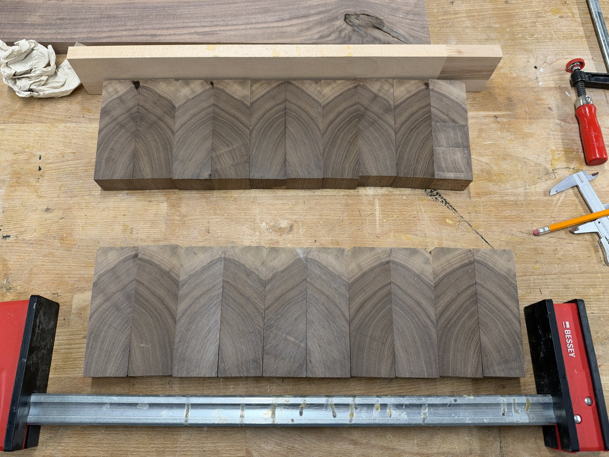
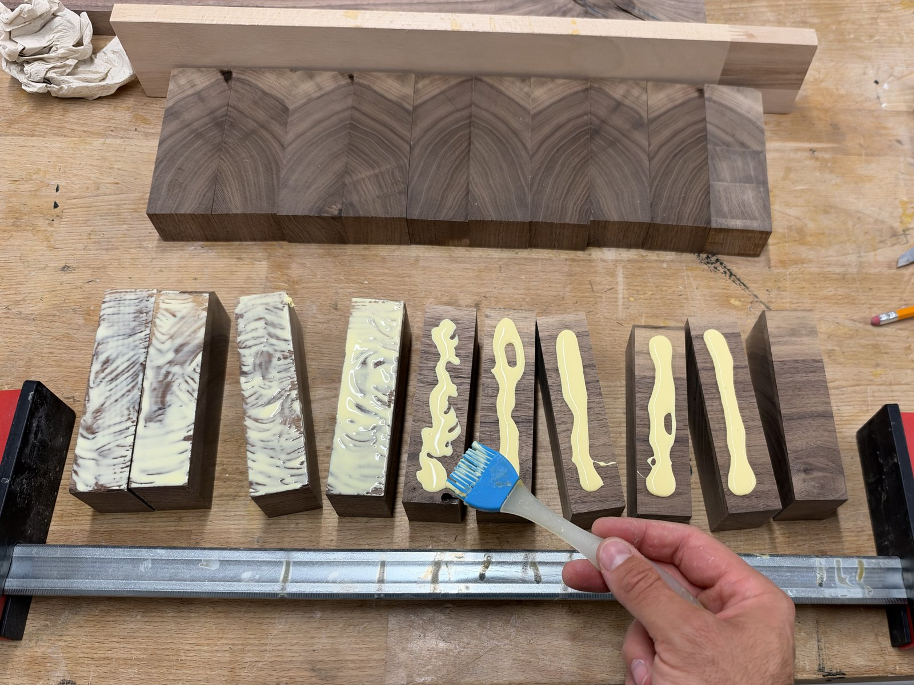
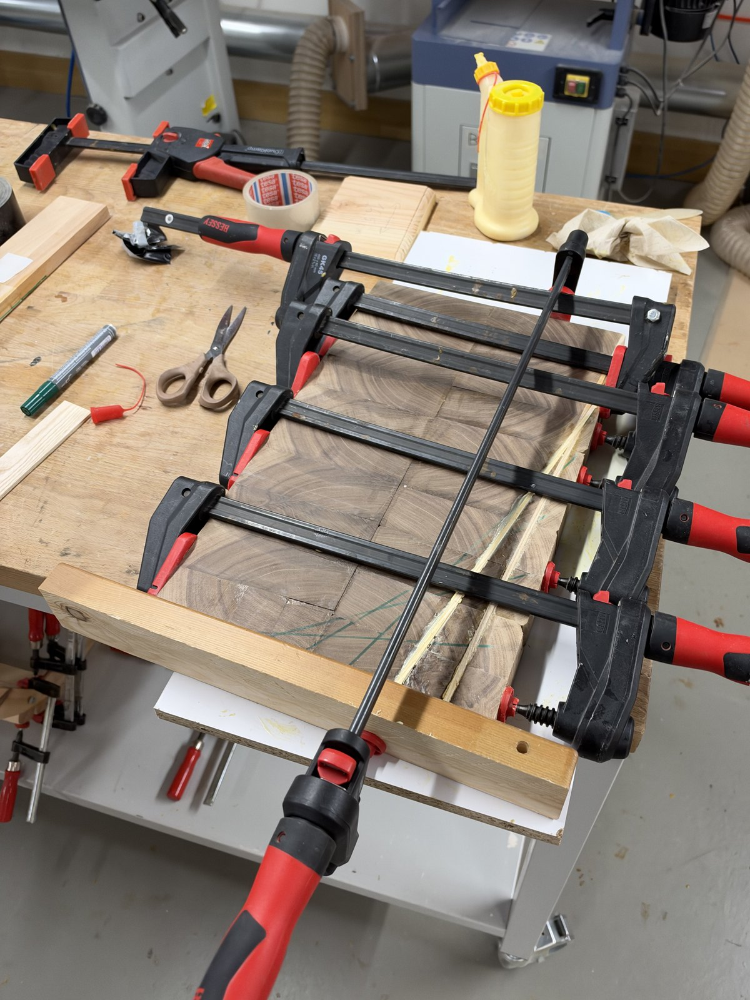
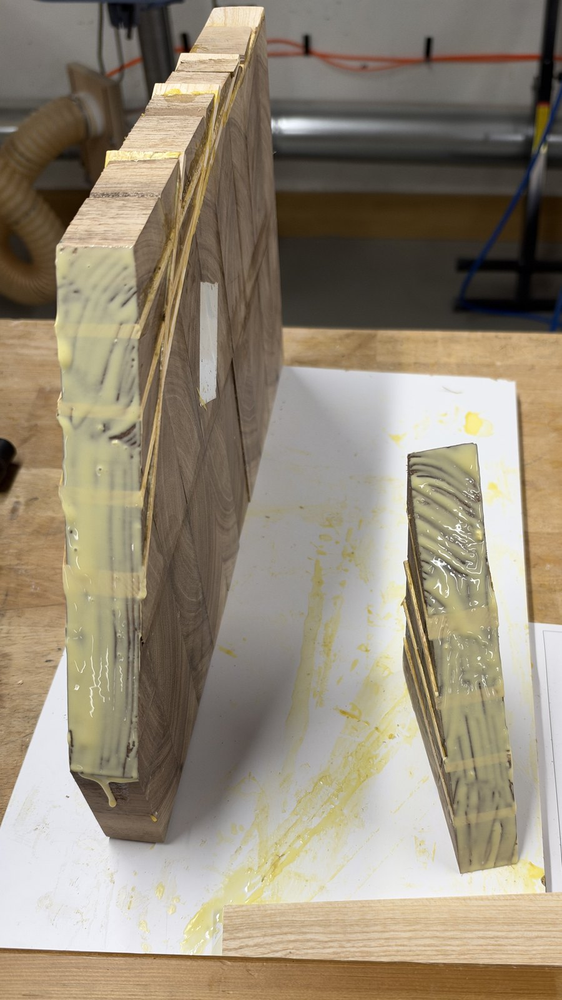

Projekt 07 • Parabolische Tangenten-Intarsie / Hirnholz-Hackblock
Nussbaum & Esche Geometrie-Hirnholz-Schneidebrett
Ein 27 cm × 37 cm × 27 mm grosses Hirnholz-Schneidebrett aus 20 buchgespiegelten Blöcken europäischem Nussbaum (Juglans regia) und sechs sich kreuzenden Tangenten-Adern aus europäischer Esche (Fraxinus excelsior). Durch sequenzielle Schnitte mit der Tauchsäge entsteht über den symmetrischen Jahresringen eine präzise parabolische Hüllkurve.
Projektspezifikationen & Werkstatt-Parameter
Endmasse
27,0 cm Breite × 37,0 cm Länge × 27 mm (2,7 cm) Stärke
Faserarchitektur
Echte Hirnholz-Matrix — Stehende Nussbaum-Kapillarfasern kombiniert mit sich kreuzenden Längsholz-Tangentenleisten aus Esche
Blockraster & Spiegelung
20 buchgespiegelte Nussbaum-Klötze in einem 2×10-Raster mit kathedralenartig zulaufenden Jahresringen
Geometrisches Muster
6-strahlige parabolische Tangenten-Hüllkurve — Gerade Linien zwischen äquidistanten Randpunkten formen eine quadratische Bézier-Kurve
Iterativer Schnittfugen-Ersatz — Sägen, Verleimen, Aushärten und Bündigschneiden jeder einzelnen Eschenader vor dem nächsten Winkelschnitt
Schleifsequenz
Formatschnitt und stufenweiser Feinschliff: 80 → 120 → 180 → 240 (Wässern mit destilliertem Wasser) → 320er Korn
Oberflächenschutz
Tiefe Sättigung mit lebensmittelechtem USP-Mineralöl & Schweizer Bio-Bienenwachs Holz-Butter
Herkunft
Zürich, Schweiz
Interaktive Oberflächenverwandlung
Rohe 6-strahlige Verleimung vs. Formatierter & Feingeschliffener Block
Verschieben Sie den mittleren Regler, um die rohe Platte direkt aus den Zwingen – mit überstehenden Eschenleisten und ausgehärtetem Leimaustritt – mit dem exakt formatierten und auf Korn 320 geschliffenen Schneidebrett zu vergleichen.
Eine chronologische Dokumentation in 17 Fotos und HD-Video: vom Spiegeln der Jahresringe über die zweistufige Blockverleimung bis zum sechsstufigen Einweben der parabolischen Eschenadern.
Schritt 01Maserungs-Choreografie
Buchspiegelung von 20 Nussbaum-Hirnholzblöcken zu Kathedralbögen
Jedes ausdrucksstarke Geometriebrett beginnt lange vor dem ersten Intarsienschnitt mit einer präzisen Holzauswahl. Zwanzig starke Hirnholzblöcke aus abgelagertem europäischem Nussbaum (Juglans regia) wurden fortlaufend abgelängt und in zwei Spalten zu je zehn Reihen ausgelegt.
Durch das paarweise Aufklappen benachbarter Segmente treffen die geschwungenen Jahresringe exakt an der Mittelfuge aufeinander und formen symmetrische Spitzbögen sowie geschlossene Rautenaugen. Gleichzeitig kompensiert der wechselnde Jahrringverlauf zuverlässig das Schwinden und Quellen über die 27 cm Gesamtbreite.
Symmetrische Hirnholz-Anordnung aller 20 Nussbaumsegmente vor dem ersten Verleimvorgang.Klicken zum Vergrössern
Werden aufeinanderfolgende Hirnholzscheiben desselben Nussbaumkantels wie Buchseiten aufgeklappt, fluchten Früh- und Spätholzringe auf den Zehntelmillimeter genau entlang der Leimfuge – organische Wuchsringe werden zu strenger architektonischer Symmetrie, während sich innere Spannungen gegenseitig aufheben.
Schritt 02Spaltenaufbau & Trockenprobe
Zweispaltige Vorbereitung & Einrichtung der Korpuszwingen
Anstatt alle 20 Einzelklötze gleichzeitig unter Zeitdruck zu verleimen, wurde das Feld in zwei präzise beherrschbare 10er-Stangen aufgeteilt. Jede Reihe wurde entlang einer abgerichteten Hartholz-Richtleiste auf einer Bessey K-Body REVO Korpuszwinge ausgerichtet.
Eine trockene Spannprobe stellte sicher, dass sich sämtliche Leimfugen bereits bei moderatem Anpressdruck absolut spaltfrei schliessen.
Parallele Spannbacken gewährleisten exakte Flucht über die gesamte Länge von 37 cm.Klicken zum Vergrössern

Letzte Trockenkontrolle aller Übergänge vor dem Leimauftrag.Klicken zum Vergrössern
Schritt 03Erste Verleimstufe
Benetzung der offenen Hirnholzporen & Stangenverleimung
Grosszügige Raupen aus wasserfestem Titebond III Ultimate Aliphatleim wurden direkt auf der Zwingenschiene über alle Kontaktflächen der Nussbaumklötze aufgetragen.
Mit einem flexiblen Silikonpinsel wurde der Leim vollflächig zu einem gleichmässigen, geschlossenen Film verstrichen. Nur so lassen sich verhungerte Leimfugen verhindern und dauerhaft hochfeste Verbindungen erzielen.

Systematischer Leimauftrag direkt auf der Korpuszwinge.Klicken zum Vergrössern
Schritt 04Platten-Verleimung
Fügen der beiden 10er-Spalten entlang der Mittelachse
Nach 24 Stunden Aushärtezeit wurden die Kontaktkanten der beiden verleimten 10er-Stangen abgerichtet, um eine haarscharfe Längsfuge exakt in der Brettmitte zu schaffen.
Auf einer leimabweisenden weissen Melaminplatte wurde eine durchgehende Leimspur entlang der Mittelnaht gezogen, glatt verstrichen und zum massiven Nussbaum-Rohling verpresst.
Durchgehende Leimraupe an der Mittelfuge vor dem Verstreichen und Verpressen.Klicken zum Vergrössern
Schritt 05Geometrischer Aufriss
Konstruktion der 6-strahligen parabolischen Tangenten-Hüllkurve
Auf dem mit kräftigen Tempergusszwingen gespannten Nussbaumblock wurde die Geometrie der späteren Intarsien direkt mit grünem Anreissstift konstruiert.
Sechs gleichmässig verteilte Teilungspunkte an der Unterkante wurden der Reihe nach mit sechs korrespondierenden Teilungspunkten an der rechten Seitenkante verbunden (1 mit 1, 2 mit 2 bis 6 mit 6). Die Schnittpunkte dieser geraden Strahlen zeichnen als Hüllkurve einen fliessenden quadratischen Bézier-Parabelbogen.
Äquidistante Randteilungen erzeugen durch rein gerade Verbindungslinien einen harmonischen Parabelbogen.Klicken zum Vergrössern
In der projektiven Geometrie bilden Verbindungsgeraden gleichmässig geteilter Achsen die Tangentenschar einer Parabel. Obwohl jeder Sägeschnitt und jede Eschenleiste vollkommen gerade verläuft, nimmt das Auge eine elegant geschwungene Kurve wahr, die das dunkle Hirnholz einrahmt.
Schritt 06Intarsien-Strahl 01
Erster Trennschnitt & Einleimen der ersten Eschen-Tangente
Die Websequenz startet mit dem steilsten äusseren Strahl. Nach dem vollständigen Durchtrennen des Nussbaumblocks entlang der ersten Anrisslinie wurde eine passgenau ausgehobelte Leiste aus heller Europäischer Esche (Fraxinus excelsior) in die Schnittfuge eingeleimt.
Nach dem Aushärten werden die Überstände bündig abgenommen, sodass das Brett für den nächsten kreuzenden Schnitt wieder als geschlossene Platte vorliegt.
Strahl 01 vollendet: Klarer Hell-Dunkel-Kontrast entlang der rechten Flanke.Klicken zum Vergrössern
Schritt 07Geführte Tauchschnitte
Anschlag-Kalibrierung & Diagonalschnitte mit der Makita 36V Tauchsäge
Spitzwinklige Diagonalschnitte durch 27 mm starkes Hirnholz verlangen eine absolut verwindungssteife Zwangsführung, damit das Sägeblatt nicht verläuft. Für jeden einzelnen Strahl wurde eine abgerichtete Hartholz-Führungsleiste exakt im Schnittwinkel auf der Werkbank festgezwungen.
Entlang dieses Anschlags trennte die gekoppelte Makita 36V (2×18V) Brushless-Tauchsäge mit angeschlossener Absaugung sowohl das dichte Nussbaum-Hirnholz als auch die bereits verleimten Eschenadern ausrissfrei und leimfertig durch.
Festgezwungener Parallelanschlag verhindert jedes seitliche Verlaufen im spitzen Winkel.Klicken zum Vergrössern
Präziser Hartmetall-Tauchschnitt durch Nussbaum-Hirnholz und bestehende Eschen-Intarsien.Klicken zum Vergrössern
Durchtrennt ein Sägeblatt eine bereits eingeleimte Ader schräg, würde der Materialverlust der Schnittfuge (ca. 2,2 mm) die beiden Enden der älteren Ader seitlich gegeneinander versetzen – es sei denn, die neu eingesetzte Eschenleiste entspricht auf das Zehntel genau der entfernten Sägeblattstärke!
Durch das exakte Kalibrieren aller sechs Eschenleisten auf Sägefugenstärke laufen sämtliche früheren Strahlen ohne jeden Treppenversatz schnurgerade durch alle Kreuzungspunkte weiter. Beim Verpressen verhindert eine untere Stoppleiste mit diagonal angesetzter Bessey-Zwinge jedes Aufschwimmen auf dem Leimfilm.
Exakt auf Schnittfugenbreite gehobelte Leisten garantieren fluchtende Kreuzungspunkte ohne Versatz.Klicken zum Vergrössern

Mehrachsige Spanngeometrie sichert gleichzeitig Fugenschluss und Längsregistrierung.Klicken zum Vergrössern
Die goldene Regel kreuzender Intarsien: Exakte Schnittfugen-Kompensation
Ist eine eingelegte Leiste dicker oder dünner als die Sägefuge, springt jede zuvor eingelegte Linie an der Kreuzung seitlich aus der Flucht. Stimmen Sägeblattstärke und Leistenstärke exakt überein, laufen alle früheren Strahlen optisch ununterbrochen weiter.
Schritt 09Einweben der Strahlen 04–06
Sequenzielle Schnitt-und-Härte-Zyklen bis zum fertigen Parabelgeflecht
Da jeder neue Tangentenschnitt alle vorangegangenen Adern kreuzt, können sich schneidende Linien niemals gleichzeitig verleimt werden – jeder einzelne Strahl erfordert seinen eigenen Zyklus aus Sägeschnitt, beidseitigem Leimauftrag, Verpressung und Aushärtung.
Bei den Strahlen 04, 05 und 06 verwandelt sich das abgetrennte Ecksegment zunehmend in ein filigranes Mosaik aus Nussbaum-Hirnholz und Eschen-Querschnitten. Hochkant auf der Melaminplatte aufgestellt, wurden beide Schnittflanken satt mit Titebond III eingestrichen, bevor die sechste und letzte Tangente das Geflecht vollendete.
Beidseitiger satter Leimauftrag verhindert trockene Stellen im saugfähigen Hirnholz.Klicken zum Vergrössern
Fünf konvergierende Tangentenvektoren ohne Versatz an den Kreuzungspunkten.Klicken zum Vergrössern
Präzise Mehrpunkt-Kreuzungen im unteren rechten Eckfeld.Klicken zum Vergrössern

Die sechste Verleimung schliesst das mathematische Tangentengeflecht ab.Klicken zum Vergrössern
Nach dem Lösen der letzten Zwingen zeigte sich das vollständige Geflecht aller sechs sich kreuzenden Eschenstrahlen im dunklen Nussbaumfeld. Überstehende Leistenenden und Leimperlen wurden abgenommen und alle vier Aussenkanten exakt rechtwinklig auf das Endmass von 27 cm × 37 cm × 27 mm formatiert.
Nach dem Planfräsen und dem stufenweisen Exzenterschliff von Korn 80 bis 240 wurde die Oberfläche mit destilliertem Wasser benetzt, um gestauchte Hirnholzfasern aufzustellen, auf Korn 320 samtweich ausgeschliffen und mit lebensmittelechtem USP-Mineralöl sowie Schweizer Bienenwachs-Holz-Butter veredelt.
Der rohe Monolith nach dem sechsten Spannzyklus vor dem Besäumen und Schleifen.Klicken zum Vergrössern
Vollendete Geometrie: Buchgespiegeltes Nussbaum-Hirnholz im Dialog mit sechs präzisen Eschen-Tangenten.Klicken zum Vergrössern
Werkstatt-Video: Nahaufnahme über die buchgespiegelten Jahresringe des Nussbaum-Hirnholzes und die präzisen Eschen-Kreuzungspunkte.HD-Video (12 Sek.)
Holzkunde & Entwurfsgeometrie
Materialkontrast & Konstruktive Harmonie
Das Zusammenspiel aus samtigem Nussbaum-Hirnholz und heller, zähelastischer Esche verlangt abgestimmte Holzhärten und höchste Schnittpräzision.
Schweizer / Europäischer Nussbaum
Juglans regia
Geschätzt für sein schokoladenbraunes Kernholz und ausdrucksstarke Wuchsringe. Als echtes Hirnholz orientiert, weichen die stehenden Fasern feinen Messerklingen sanft aus und schliessen sich selbstheilend wieder.
Janka-Härte
1'010 lbf
Funktion
20-Block Hirnholzfeld
Europäische Esche
Fraxinus excelsior
Zähelastisches, ringporiges heimisches Hartholz, traditionell erste Wahl für Werkzeugstiele und Biegeholz. Ihr heller, cremeweisser Farbton setzt messerscharfe grafische Akzente im dunklen Nussbaum.
Janka-Härte
1'320 lbf
Funktion
6 Tangenten-Adern
Parabolische Hüllkurve
Projektive Fadengeometrie
Sechs gerade Schnitte zwischen gleichmässigen Randintervallen formen eine stetige quadratische Bézier-Kurve – der Beweis, dass organische Kurven allein durch lineare Tauchsägen-Präzision entstehen können.
Intarsien
6 Gerade Vektoren
Kreuzungen
15 Präzisionsknoten
Visuelles Archiv
Vollständige 17-teilige Bau-Galerie
Klicken Sie auf ein beliebiges zentriertes hochauflösendes Foto, um Jahrringverlauf, Tauchsägen-Aufbau und Kreuzungspunkte im Detail zu betrachten.